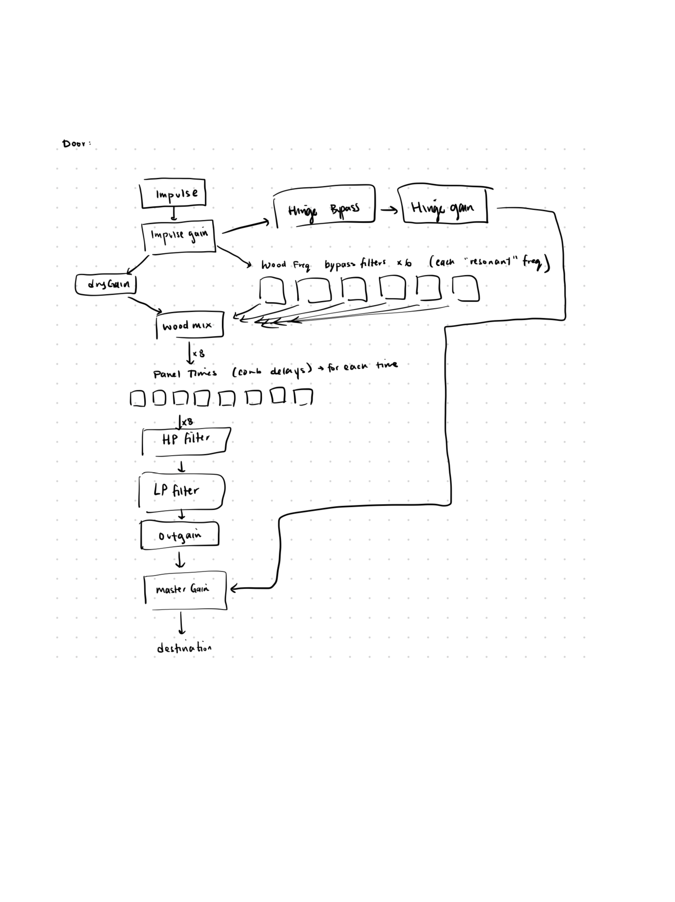
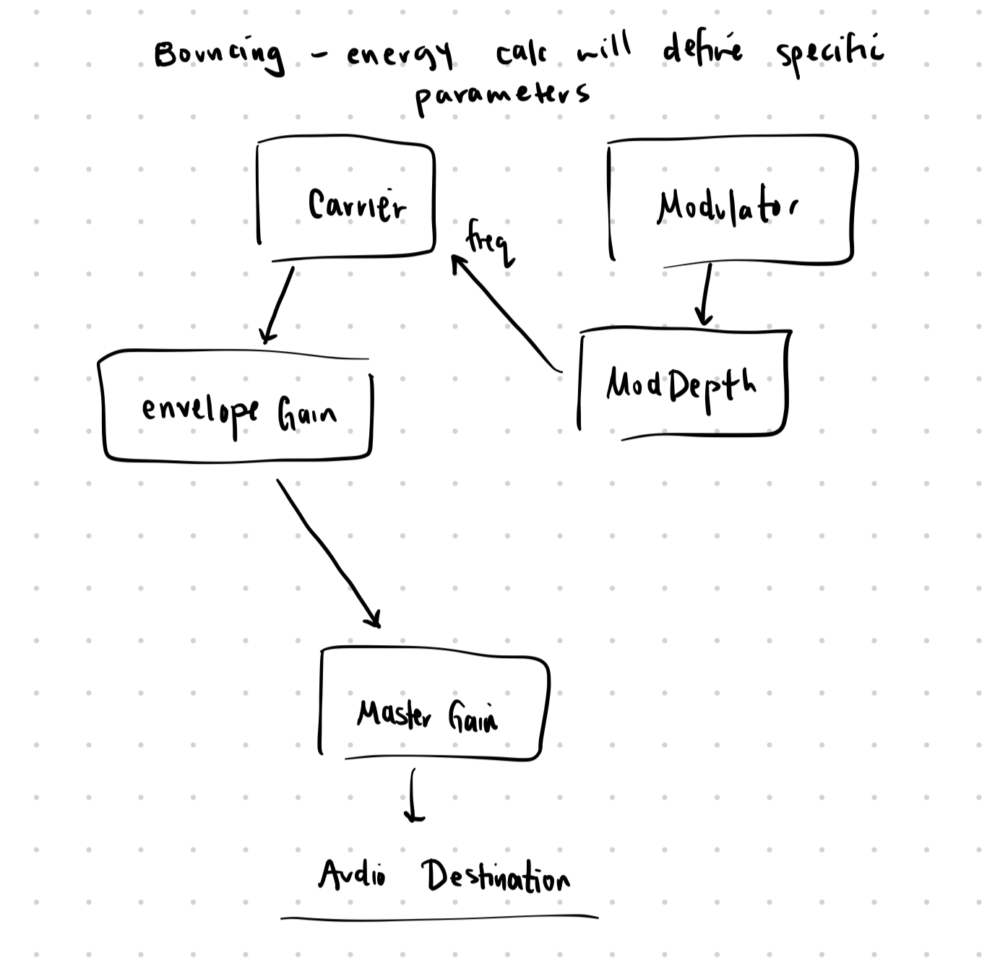

The babbling brook is a recreation of a classic SuperCollider patch in WebAudio:
Farnell models a creaking door as two components: a stick-slip friction model that generates a timed pattern of impulses, and a resonant body that colors those impulses with the natural frequencies of a wooden door panel.
This model from the text book makes sense to me since it models the friction behavior present in the physical system. The two surfaces catch onto each other, build tension, and release. Each release is an impulse. There's a threshold below which no creaking happens, which models the static friction. The interval between the events is created with an inverted force value with proportional random jitter. So slow creaking has loose timing and fast creaking has tight timing. Amplitude and decay model force buildup: so a longer gap means a louder, slower-decaying slip.
const amp = Math.sqrt(dt / 0.1) * 0.6;
const decay = 0.004 + Math.sqrt(dt / 0.1) * 0.015;Each impulse passes through a bank of six bandpass filters approximating the resonant modes of a rectangular wooden panel, with a parallel dry path. A comb delay resonator follows, with delay times derived from Farnell's rectangular membrane series. In practice the result sounded more like a creaking floorboard than a door (which Farnell notes uses the identical model, just different material parameters).
impulse → gain envelope → bandpass bank ×6 + dry → comb delays ×8 → HP 125Hz → LP 2400Hz → output

Figure 1: Signal flow diagram for the creaking door model
I wasn't very happy with the sound created with the creaking door, since I felt like a more defining characteristic of a door was a squeaky hinge, combined with slight creaks of wood. It does coincidentally sound like the floor of my room, which is peeling up because of the heater... However, while tuning the door creak I thought the sound shifted toward something more like a woodpecker or a ball bouncing on a floor. So I read Farnell's Chapter 30 on bouncing. Unsurprisingly, Farnell models it differently, so I tried to reimplement this bouncing ball in his way.
Farnell's approach is a simplified model of the underlying physics. Rather than computing actual trajectories, he observes that the key perceptual features (bounces getting closer together and quieter) can be produced by a single linear energy envelope driving everything at once. All bounces are pre-scheduled on the AudioContext clock in one pass, giving sample-accurate timing for the fast final bounces where millisecond drift would be audible. I, however, as a physics major, decided to schedule the bounces according to Newton laws, so this models a ball that bounces on earth subject to gravity :)
The impact sound uses FM synthesis rather than a formant bank. A carrier oscillator is modulated by a second oscillator whose depth scales with bounce energy. This models the physical nonlinearity Farnell describes: a high-energy bounce deforms the ball considerably, producing harmonically dense sound; a low-energy bounce barely deforms it, producing something close to a pure tone.
modDepth.gain.setValueAtTime(0.3 * energy, when);
carrier.frequency.setValueAtTime(200 - 80 * (1 - energy), when);
carrier.frequency.exponentialRampToValueAtTime(
Math.max(180, 260 - 40 * (1 - energy)), when + decay
);The carrier also sweeps downward in pitch on each impact, approximating the pitch drop as the ball shape restores. However, after implementing this model, I felt that it was too bass heavy or too resonant. Farnell's original spec puts the carrier at 120Hz (calibrated for a "very bouncy object") and he notes it breaks down for small drop heights. I believe that the carrier and adjusting the FM ratio would push it toward something lighter like a ping pong ball.
energy envelope → FM oscillator pair (carrier + modulator) → amplitude envelope → output

Figure 2: Signal flow diagram for the bouncing ball FM synthesis model
Please excuse the fact that I am not necessarily satisfied with the sounds I coded, however in doing both sounds, I got to explore different ways to model a physical system. The two Farnell chapters use completely different synthesis methods (subtractive/modal filtering for the door, FM for the ball), but both start from an excitation source that gets altered by a resonant body. For the door, the door panel is the resonator and you need filters tuned to its modes. For the ball, the deformation is the interesting part, and FM captures that more naturally than any filter could.
The babbling brook doesn't sound exactly like the audio on the homework assignment (sounds more windy and less 'bubbly'), but I'm hoping that's just because of the fact that in webaudio, all filters are biquad filters that we choose to make RLPF or LPFs.